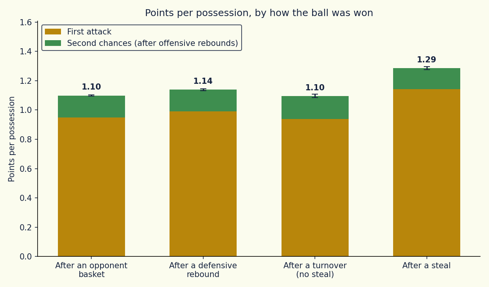
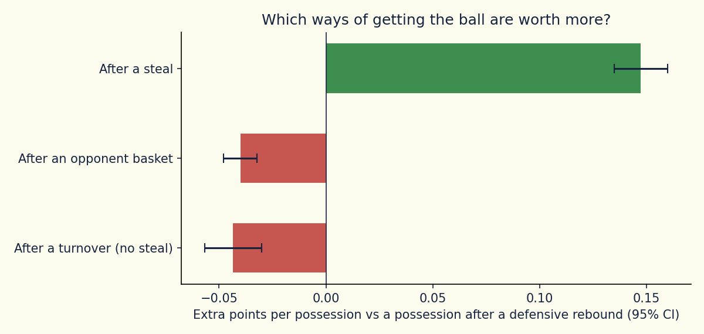
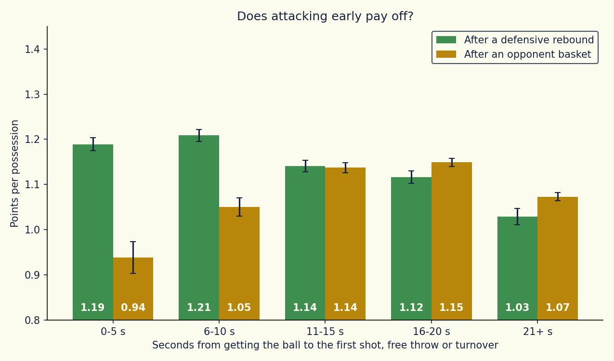
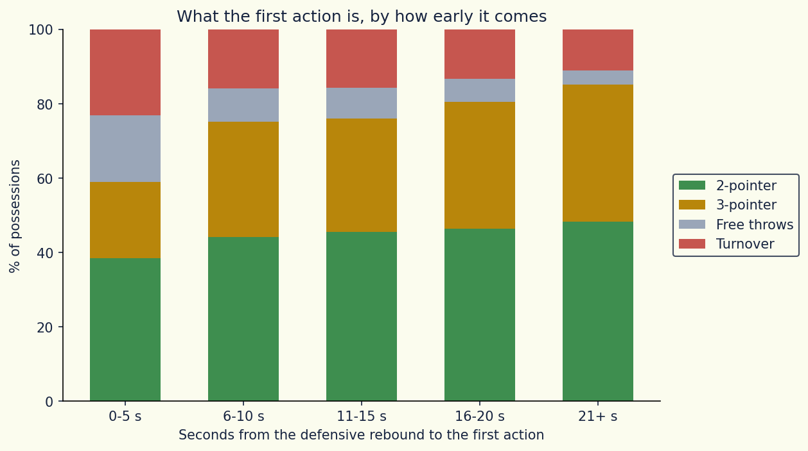

Every possession of 11 EuroLeague seasons, rebuilt from the play-by-play log, to measure how many points it produces depending on how it started and how early the team attacks.
Coaches know that not all possessions are equal. A steal leads to a fast break, an offensive rebound gives a second attack, and an inbound after a made basket means facing a defence that is already set. The usual way to judge these situations is by feel or by raw box-score counts.
This project puts a number on them, using the sequence of events of every game, and asks two questions: how many points does a possession produce depending on how the team got the ball, and does it pay to attack early?
The play-by-play does not mark possessions, so they are reconstructed from the sequence of events. A possession starts when a team gets the ball and ends when the other team gets it, and each one is labelled by how the team got the ball: after an opponent basket, after a defensive rebound, after a steal, or after a turnover without a steal (out of bounds, travel, offensive foul).
An offensive rebound is not a new possession. The points scored after it are credited to the possession that missed, so second chance points are part of the value of the possession that created them.
The first question is how many points a possession produces depending on how the team got the ball. A possession can start in four ways: after a steal, after a defensive rebound, after an opponent basket, or after a turnover without a steal. The table compares them over the 11 seasons.
How to read it:
| Possession starts | Number of possessions | First attack | Second chances | Points per possession |
|---|---|---|---|---|
| After a steal | 41,080 | 1.14 | 0.15 | 1.29 |
| After a defensive rebound | 149,075 | 0.99 | 0.15 | 1.14 |
| After an opponent basket | 219,985 | 0.95 | 0.15 | 1.10 |
| After a turnover (no steal) | 38,606 | 0.94 | 0.16 | 1.10 |

A steal is the most valuable way to get the ball: 1.29 points per possession, 0.15 more than after a defensive rebound. The advantage comes from the fast break, with a defence that has not had time to get set. The premium is positive in every one of the 11 seasons, between +0.11 and +0.22.

A turnover without a steal is not a gift to the other team: the possession that follows is worth slightly less than after a defensive rebound (-0.04), the same as after an opponent basket. The ball is dead, so the defence has time to set up.
An offensive rebound is an extra attack inside the same possession. The team scores 1.07 points on average from the rebound until it loses the ball.
The direction of all this is what any coach expects. What the data adds is the size of the differences.
For every possession we measured the seconds between getting the ball and the first shot, free throw or turnover. Possessions in the last 24 seconds of a period and in the last 2 minutes of the fourth quarter and overtime are excluded, because there the clock or intentional fouls force the pace.

After a defensive rebound, attacking early pays off, but not at the maximum speed. The best result comes when the first action arrives between 6 and 10 seconds (1.21 points per possession), while attacking in the first 5 seconds gives 1.19 and waiting more than 20 seconds drops to 1.03. The gap between fast possessions (up to 10 seconds) and slow ones (16 seconds or more) is positive in every season, between +0.08 and +0.15 points.

The reason the fastest bucket does not win is in this chart. In the first 5 seconds, 23% of possessions start with a turnover, against 16% in the 6-10 second bucket and 11% beyond 20 seconds. Pushing the ball brings easy shots and free throws, but it also costs more lost balls.
After an opponent basket the picture is different. A possession whose first action comes within 10 seconds produces 1.02 points on average (0.94 in the first 5 seconds, 1.05 between 6 and 10), against 1.14 when the first action comes between 11 and 20 seconds. The defence is already set, so hurrying brings no advantage.